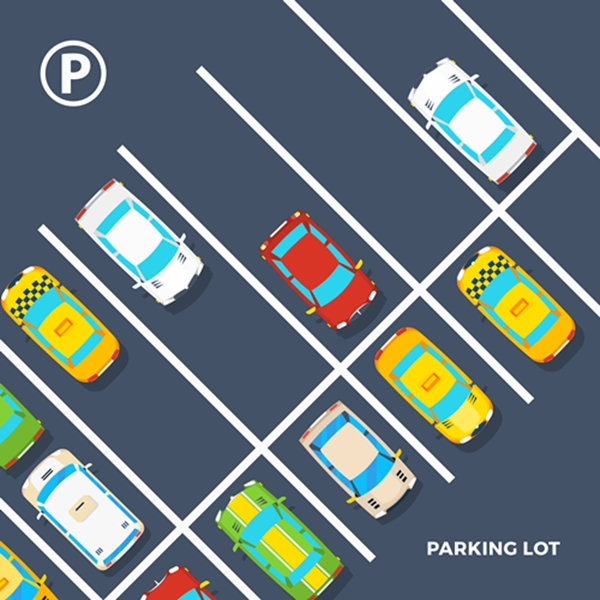
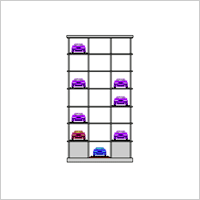
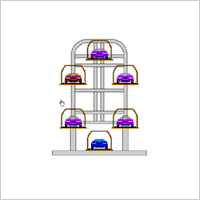
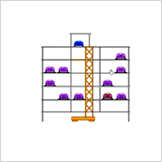
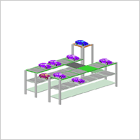
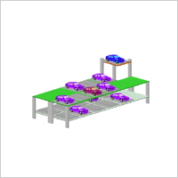
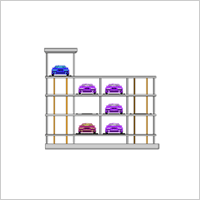
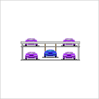
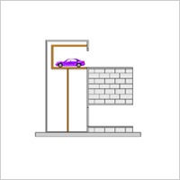

주차부문
- 사업부소개
- 여러 기관에서 입증된 기술과 최첨단 자동화 설치로 인한 가치혁신
LOTTE PARKING SYSTEM 에 방문해주신 분들께 감사드립니다.
저희 LOTTE PARKING SYSTEM 은 항상 고객중심의 사고를 바탕으로
안전과 편리에 최선을 다하고 있습니다.
LOTTE PARKING SYSTEM 안내
 01시스템 사업부 직원 일동은 보다 새로운 생각과 행동으로 고객의 마음과 취향을 최대한 살린 이상적인 주차환경을 창조해 나가겠습니다. 최고의 생산설비와 체계적인 시공을 바탕으로 한 롯데기공이 철저한 품질관리와 최상의 서비스로 찾아뵙겠습니다.
선진기술의 도입(독일 : KRUPP, 일본 : SHINMAYWA, 이태리 : INTER PARK)과 도입된 기술의 자체 보유화에 노력한 결실로 어떠한 여건에서도 설치 가능한 다양한 기종의 주차설비를 보유한 롯데기공 주차시스템으로 영국 BBC방송과 기네스북을 통하여 주차설비의 우수성이 입증되었습니다. 빠른 움직임속에서의 안전은 많은 고객들에게 만족을 이끌어 냅니다. 저희 LOTTE PARKING SYSTEM은 정확하고 빠른 시스템으로 모든 고객들에게 만족감을 드리고자 SS정신을 바탕으로 고객입장에서 행동하고 있습니다.
LOTTE PARKING SYSTEM 우수성
고객을 위한 주차공간은 이제 사업 경쟁력 강화를 위하여 준비하여야 하는 최우선의 필수 조건이 되었습니다.
롯데기공의 컴퓨터 주차시스템으로 넉넉하고 편리한 주차공간과 함께 빌딩의 가치를 한 층 더 높이시기 바랍니다.
- 다양한 기종
- 기존 TYPE을 바탕으로 각 TYPE별 강점을 부각시켜 새로운 제품 생산에 주력하여 제품의 차별화를 통해 다양한 SYSTEM을 개발하고 있습니다.
- 완벽한 작동
- 최첨단 장비와 우수한 인력을 바탕으로 주차기기 작동에 있어 완벽함을 입증받고 있습니다.
- 첨단 기술력
- 전품목에서 교통부 인정서 1호를 획득하고 있는 저희 롯데 PARKING SYSTEM은 항상 앞서 나가고 있는 첨단 기술력을 바탕으로 국내에서의 안전성과 편리성을 인정받아 해외 수출 및 기술이전에서도 앞서 나가고 있습니다.
- 철저한 A/S 정신
- 전국 30여개의 사업망으로 1년 365일 언제 어디서나 빠른 시간내에 도착할 수 있도록 항상 최선을 다하고 있습니다.
- 롯데기공 주차설비의 특징
- 소음과 진동을 최소화하여 내구성이 뛰어납니다.
- 컴퓨터를 이용한 이중제어 SYSTEM으로 완벽한 작동 및 안전성과 편리함을 보장합니다.
- 다양한 기종으로 지하는 물론 지상공간을 극대화한 최소면적의 주차설비입니다.
- 시간별 선별주차 및 예약출고 프로그램 구성으로 입/출고 시간을 최소화시킨 설비입니다.
- 국내 모든 SYSTEM은 MODEM SYSTEM 관리로 사후관리는 물론 사전관리까지 철저하게 보장됩니다.
LOTTE PARKING SYSTEM 종류
- 01 내구성
- 소음과 진동을 최소화하여 내구성이 월등합니다
- 02 안전성
- 컴퓨터를 이용하는 이중제어방식 채택으로 완벽한 작동 및 안전성과 편리함을 보장합니다
- 03 다양함
- 다양한 기종으로 지하는 물론 지상공간을 극대화 한 최소면적의 주차설비 시설입니다
- 04 시간단축
- 시간별 선별주차 및 예약 출고 프로그램 구성으로 입/출고 시간을 최소화 시킨 설비입니다
- 05 완벽한A/S
- Modern 방식의 시스템 관리로 사후관리는 물론 사전관리까지 철저하게 보장됩니다
- 승강기식(LV-SYSTEM)
- 
- 수직순환식(LMG-SYSTEM)
- 
- 승강기슬라이드식(LST-SYSTEM)
- 
- 평면왕복식(LMT-SYSTEM)
- 
- 수평순환식(LMG-SYSTEM)
- 
- 다층순환식(LU-SYSTEM)
- 
- 승강횡행식(LP-SYSTEM)
- 
- 자동차용 엘레베이터
- 